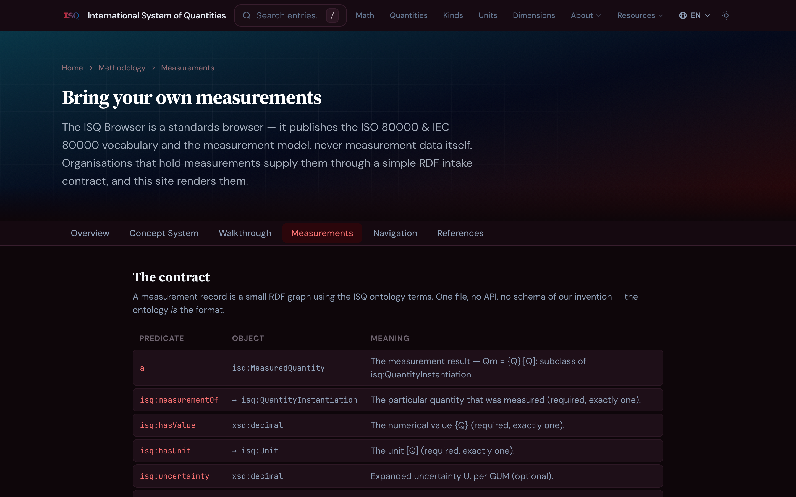
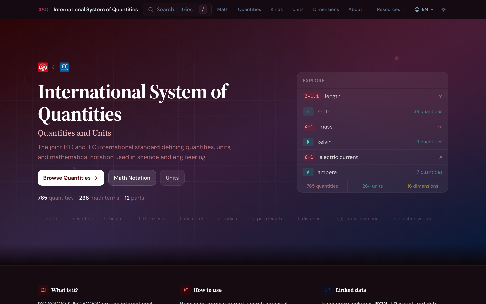
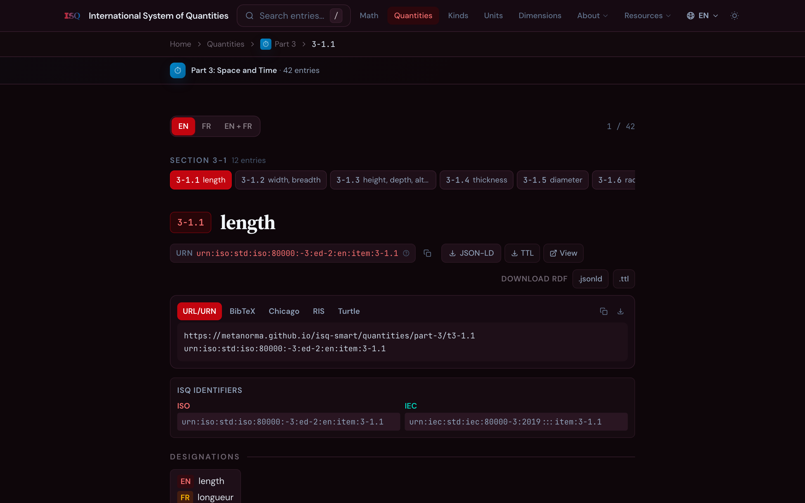
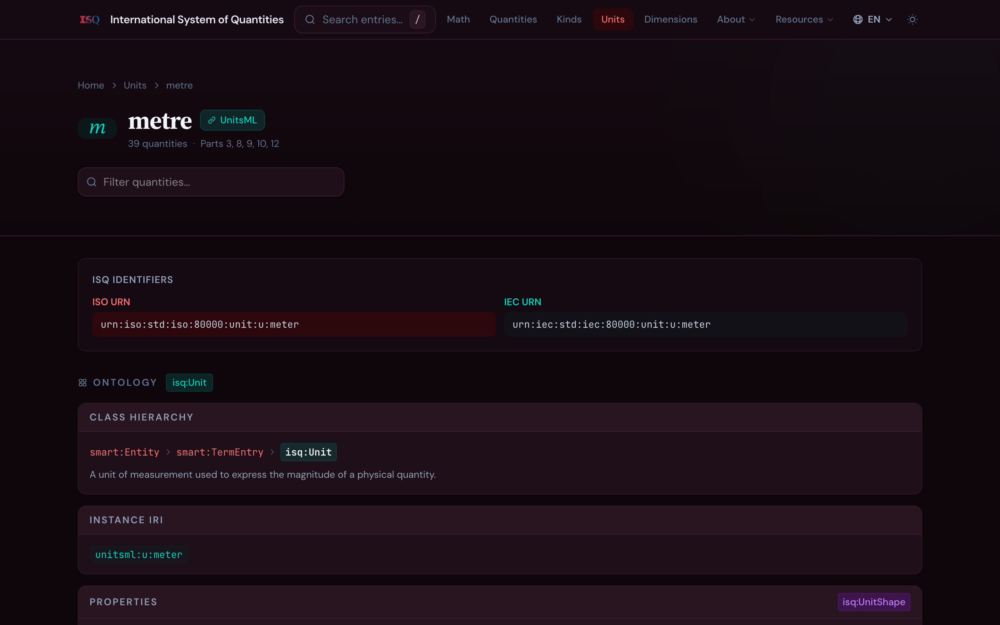
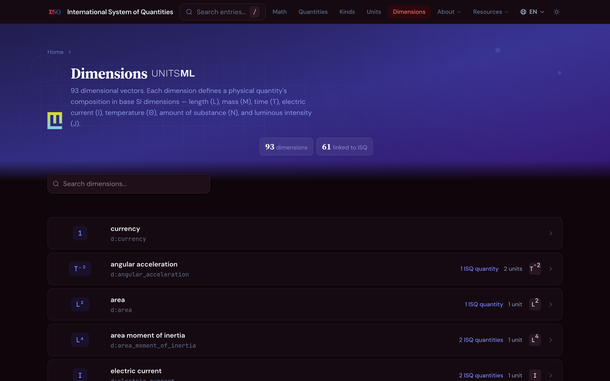
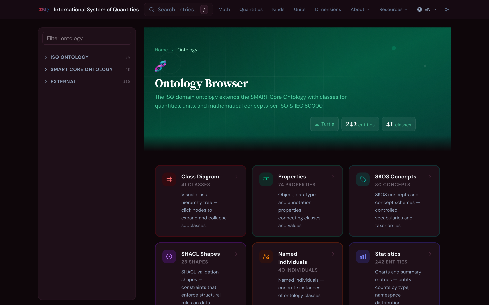
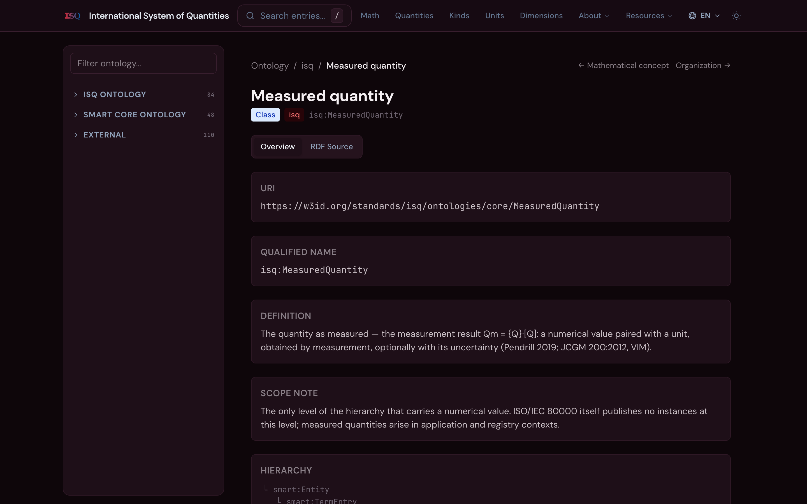
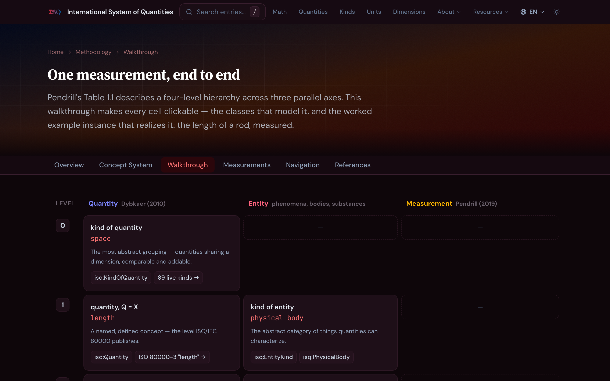

L1 length
L2 length of rod
L3 1.234 m ± 0.001
quantities · units · measurement
ISQ in SMART
The International System of Quantities as an information service
November 2026
History of the dataset
Two parts of the dataset: math and quantities
ISO 80000-2 — signs, symbols and math concepts, each with its machine-readable expression.
m2-1.1 ± plus-minus
Parts 3–13 — every quantity with ID, name, symbol, definition, unit and notes.
t3-1.1 length l
- One ID space, one structure — ISO 10241-1 terminology schema under the whole dataset
- Cross-references between parts resolve as data, not prose
The ISQ dataset is now used to revise the 80000 series
ISO 80000-2 and ISO 80000-4 are being revised now, using the ISQ dataset as the source of truth in ISO/TC 12. Future revisions are expected to continue from the dataset.
Parts 2–13
in the browser today
ISO 80000-2
sourced from UnitsDB
Two kinds of content in the 80000 series
Published on the OBP. Definitions and term entries, publicly browsable.
The “ID / Quantity / Unit” tables and their notes. Not public — but machine-readable in the dataset.
- OBP data availability is inconsistent across parts — ISO 80000-3 is there, ISO 80000-11 refers to other clauses
- Other unit datasets reference ISQ: UnitsML and IEC CDD
Who wants the dataset, and how
- IEC SC 3D (CDD), via IEC TC 25 — reference data for electrotechnical quantities
- ISO/TC 184/SC 4 (Industrial Data) — quantity data inside industrial models
- ISO/TC 154 (ebXML) — semantic references in electronic business data
- Other TCs host their own terms — ISO/TC 204 on GitHub, ISO/TC 211 via its Maintenance Agency — we want the same autonomy for 80000 consumers
The answer is access: a stable, versioned, machine-readable service that any committee can build on — without touching the standards themselves.
Entering SMART
The SDU SMART information model, and the ISO & IEC 80000 ontology built on top of it.
The SMART information model is available
SDU SMART publishes a core ontology for standards data — generic classes for documents, terms, and their relations.
- Public at smartsdu.org/informationmodel
- ISQ Browser consumes it as a downstream user — the core stays untouched
- Domain extensions live in separate, versioned ontologies that import the core
The ISO & IEC 80000 ontology, on top of “smart”
“isoiec80000” models what the series actually publishes — four domain classes over the SMART core:
- Sample instances published for each class — math, quantities, units, dimensions
Modelling measurement itself
A four-level measurement hierarchy, implemented as linked data.
“length” alone cannot say what was measured
The published series defines length — the kind of quantity. It cannot express the length of this rod, measured today, to ± 0.001 m. That gap sits between committees and every industrial use of their data.
- Pendrill (2024) resolves this with a four-level hierarchy across three parallel axes: quantity, entity, measurement
- The ISQ extension implements the model as OWL classes and properties — not prose
- The published series stays untouched: the extension sits beside ISO 80000, pointing at it
Four levels, three axes
| Level | Quantity · Dybkaer | Entity | Measurement |
|---|---|---|---|
| 0 | kind of quantity space | — | — |
| 1 | quantity, Q = X length | kind of entity physical body | — |
| 2 | dedicated quantity length of rod | entity rod | — |
| 3 | quantity instantiation length of rod AB, 09:15 | entity instantiation rod AB | quantity as measured 1.234 m ± 0.001 |
Empty cells are part of the model — only the quantity axis reaches level 0; the measurement axis exists only at level 3. Every cell is live in the browser’s walkthrough.
The isq extension, v1.1.0
Classes — the hierarchy as OWL:
Properties — the relations between levels:
How it attaches to the series
- isq:DedicatedQuantity dedicatedTo → the published entry, e.g. t3-1.1 “length”
- Entity kinds subclass SMART core entity classes
- Versioned owl:versionInfo 1.1.0, SHACL-validated in CI
- Served as RDF — Turtle and JSON-LD, downloadable per entity
One measurement, end to end: the rod
Each step is a live page in the browser — and the same chain is downloadable as isq-examples.ttl.
Where the extension lives — and what we never touch
Ours, versioned in the ISQ Browser
- ontologies/isq.ttl — the measurement layer, v1.1.0
- ontologies/isq-examples.ttl — the rod worked example
- Full ontology download at …/ontology/full.ttl
Theirs — consumed, never modified
- SDU SMART core ontology — read-only upstream
- ISO/IEC 80000 dataset — read-only source data
- UnitsDB (UnitsML) — read-only units and dimensions
All ISQ-specific modelling stays in our namespace. Upgrades to upstream sources flow in; nothing flows back that could destabilise them.
A contract for submitting measurements
The browser does not provide measurement data. It provides the framework — other bodies bring their own.
- Declare a dedicated quantity dedicatedTo a published entry
- Instantiate it against your entity, with time, value, uncertainty
- Validate with the published SHACL shapes; ship Turtle or JSON-LD
The intake path is documented at …/methodology/measurements.

The web service
The ISQ Browser — the series and its measurement layer, published as a static, linked-data site.
One front door to the series
- Explore panel — jump straight into quantities, math, units
- Full-text search across every entry — including ontology entities
- Dark and light themes, bilingual FR/EN, keyboard-first
metanorma.github.io/isq-smart

Every entry, fully linked
- ID, name, symbol, definition, notes — the normative tables, browsable
- Linked units, dimensions, math symbols and cross-references
- Dedicated quantities panel — the ontology layer attached to the published entry
- RDF downloads — Turtle and JSON-LD — per entry

Units and dimensions, from UnitsDB


The ontology, browsable


The walkthrough — the hierarchy, live
- Every cell of the level table is clickable — classes and worked-example instances
- The four-step chain from “length” to 1.234 m ± 0.001, as live pages
- Bilingual — the methodology reads in French too
…/methodology/walkthrough

Bilingual, searchable, downloadable
All French ISO and IEC parts encoded
- Every quantity name carries its French form
- One toggle — decimal commas rendered correctly
- Methodology pages fully translated
Search reaches the ontology
- Names, symbols, definitions, units — and isq:MeasuredQuantity
- Keyboard-first: / opens, arrows navigate, ↵ opens
- Lazy-loaded index — the site stays fast
And everything is data: RDF exports per entity, per part, and for the whole ontology — Turtle and JSON-LD.
Quality is part of the service
every build, zero broken
blocking CI gate
on every change
no runtime server
- Ontology SHACL-validated at build time — broken data cannot ship
- Weekly external link audit; dependency updates automated
- Open source — github.com/metanorma/isq-smart
Questions welcome — and the ladder is open for your data.